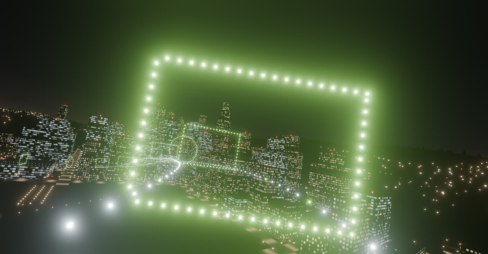
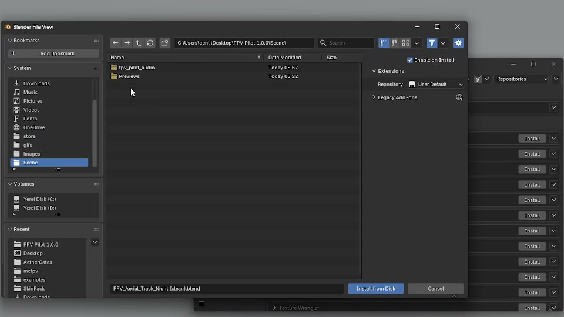
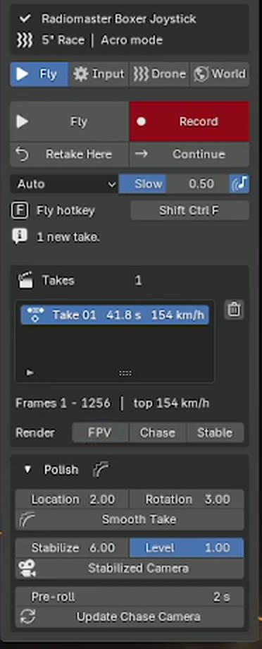
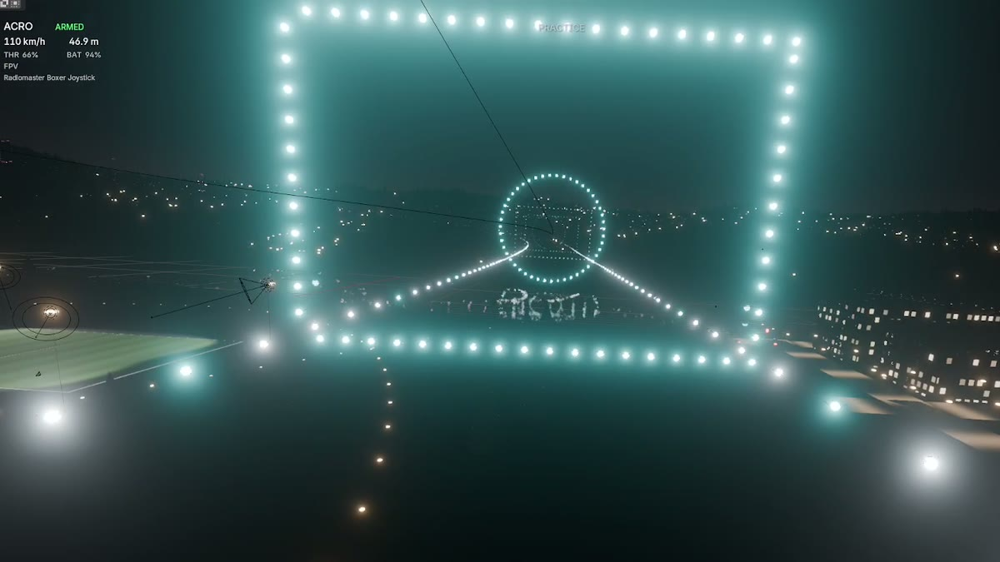
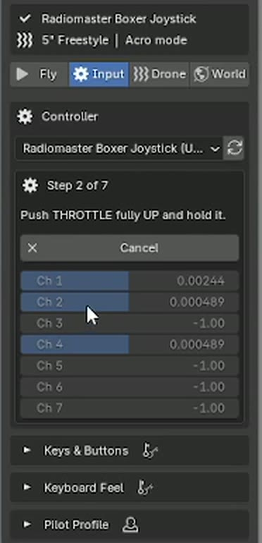
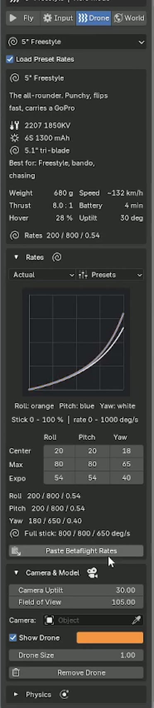
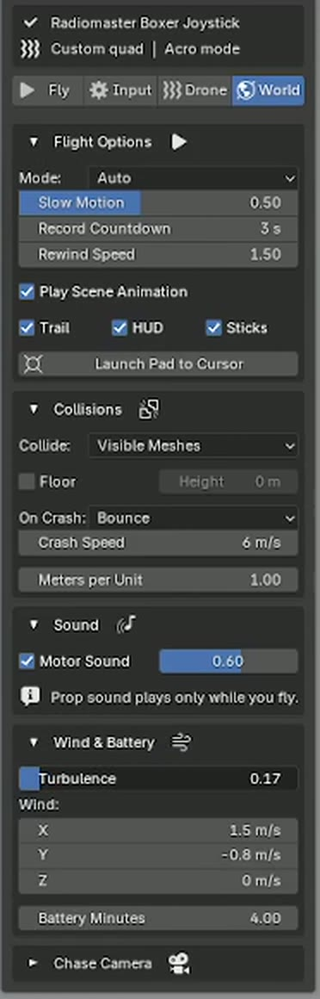
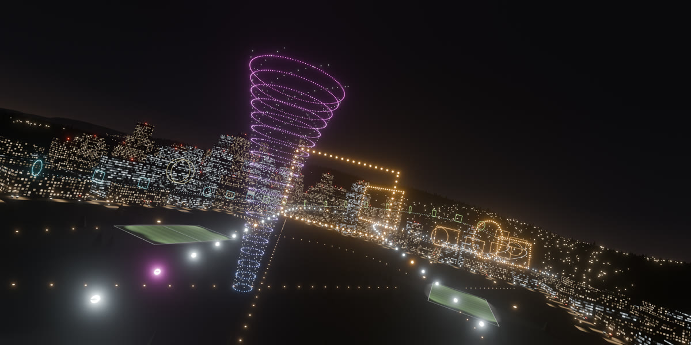
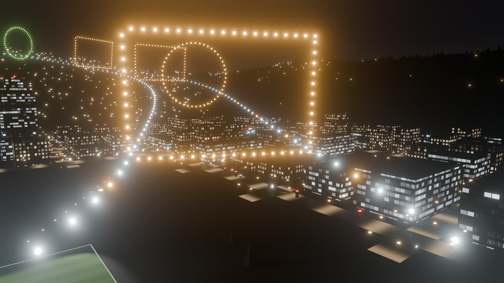

FPV Flight Simulator docs
How to install it, connect your radio or gamepad, set your rates, fly, record takes and render them. The add-on lives in the FPV Flight Simulator tab of the 3D Viewport sidebar.

Install, update, remove
- Download
fpv_flight_simulator-1.0.0.zipfrom your Superhive downloads. Don't unzip it. - In Blender open Edit › Preferences › Get Extensions, open the small arrow menu at the top right and choose Install from Disk…, then pick the zip. Dragging the zip onto the Blender window works too.
- In the 3D Viewport press N and open the FPV Flight Simulator tab.

Nothing else needs installing. Controllers are read straight through Windows (USB joystick and XInput).
The panel
| Tab | What's in it |
|---|---|
| Fly | Fly, Record, Retake, Continue and your list of takes. |
| Input | Controller, setup wizard, live input, keys and buttons, pilot profiles. |
| Drone | Drone presets, rates with the rate curve, camera and physics. |
| World | Flight options, collisions, sound, wind, battery and the chase camera. |
- The two lines at the top always show your controller and your drone.
- Getting Started is a short checklist that ticks itself off. Close it with the X.
- Advanced in the panel header shows every setting. Leave it off for a shorter panel.

Your first flight
- Press Fly (or Ctrl+Shift+F with the mouse over the viewport). If the scene has no drone yet, one is added at the 3D cursor.
- Take off. On the keyboard hold W. With a radio, arm with the throttle low, then throttle up.
- Fly. Keyboard: arrow keys move, A D turn. With no controller the drone starts in Cine mode, so letting go brakes and hovers.
- Finish with Esc. The view goes back to where it was.

Connect your controller
Anything Windows lists as a game controller works: RC radios in USB joystick mode (Radiomaster, TBS, Jumper, BetaFPV, FlySky, iFlight, DJI, any EdgeTX or OpenTX radio), Xbox and PlayStation pads, the Switch Pro controller and other USB gamepads.
- Plug it in. On a radio, pick USB Joystick (HID) when it asks.
- Open the Input tab, press the refresh button and pick your controller.
- Press Set Up Controller. Let go of the sticks (throttle down on a radio) and press Next.
- Hold each stick when asked: throttle up, throttle down, yaw right, pitch forward, roll right. Each step moves on once you've held it for a moment.
- Stir both sticks around their edges and press Finish.
The wizard finds each axis, its direction, center and range, and tells a spring-centered gamepad stick from a radio throttle. Every controller's setup is remembered, so next time you only pick it from the list.
Show Live Input shows what the drone receives. To fix a single axis, click the eyedropper next to it and move that stick, or flip it with the arrow button.

Flight modes and arming
| Mode | What the sticks do |
|---|---|
| Acro | Rotation speed, like a real freestyle quad. Nothing levels itself. |
| Angle | Tilt angle, up to 55°. Let go and it levels out. |
| Horizon | Levels near center, flips at full stick. |
| Cine | Speed. Let go to brake and hover; the throttle sets the climb rate. Easiest on keys. |
Press M while flying to switch. Auto starts in Acro with a controller and Cine on the keyboard. With a radio the throttle has to be low to arm, like on a real quad; if it isn't, the HUD says so. Keyboard and gamepad flights arm right away.
Rates
Rates use the Betaflight formulas: Actual, Betaflight, KISS and Quick. The numbers are the ones the Betaflight CLI stores (Actual center 7 = 70°/s, max 67 = 670°/s), and the line under the table shows them as Betaflight Configurator does. The curve updates as you change values: roll is orange, pitch blue, yaw white.
diff, copy the output and press Paste Betaflight Rates. Rates type, rates, expo, throttle mid, throttle expo and throttle limit come in. Drone presets then keep your rates.With Advanced on you also get Throttle Mid, Throttle Expo and Throttle Limit. You can change rates while you fly; they apply straight away.

Drone presets
Each preset sets the physics, camera uptilt, battery time, rates, throttle curve and a suggested mode. The card shows the build (motors, battery, props), weight, thrust, hover throttle and top speed. Untick Load Preset Rates to keep your own rates.
| Group | Presets |
|---|---|
| Freestyle | 5" Freestyle, 5" Juicy Freestyle, 5" Bando Basher |
| Race | 5" Race |
| Micro | 3" Toothpick, 65 mm Tiny Whoop |
| Cinematic | 3.5" Cinewhoop, 2.5" Indoor Cinewhoop, X8 Cinelifter |
| Long range | 4" Light Long Range, 6" Mountain Surfer, 7" Long Range |
| Learn | Beginner Trainer: Angle mode, soft rates, 70% throttle limit |
Weight, thrust, response
How heavy and punchy the quad is, and how fast it reaches the rotation you ask for.
Uptilt and field of view
Set the FPV camera like on your quad, or fly any camera in your scene with Camera.
Physics details
Front, side and top drag, rotor drag, prop pitch speed, angular acceleration, motor spool, collision radius and prop wash.
World settings
| Setting | What it does |
|---|---|
| Collide | Every visible mesh, one collection, or nothing. Instances and Geometry Nodes geometry count too. |
| Floor | An invisible ground plane at the height you set. |
| On Crash | Bounce and keep flying, reset to the launch pad, or pause. |
| Meters per Unit | For scenes that aren't in meters, for example 0.01 for centimeters. |
| Wind & Battery | Wind, turbulence and battery time. Thrust sags as the pack drains. |
| Flight Options | Default mode, slow-motion speed, record countdown, rewind speed, trail and HUD. |
| Sound | The prop sound while you fly, and its volume. Nothing is added to your scene. |
| Chase Camera | Distance, height and lag of the chase camera. |

Launch Pad to Cursor moves the take-off spot to the 3D cursor.
Recording and takes
- Press Record. Recording starts the moment you take off. Mid-flight, R starts it after a short 3-2-1 countdown.
- Fly. R stops and saves the take, and you keep flying. Press it again for the next take.
- Esc finishes. The last take goes on the drone and the frame range is set to it.
Rewind
Time runs backwards while you hold it, recording included. Let go and fly on from there.
Slow motion
Fly at the Slow speed (0.5 = half). The take still plays back at real speed.
Retake Here
Put the playhead where it went wrong. The old take plays for the pre-roll, the HUD shows its throttle next to yours, then you take over. Everything before stays.
Continue
The same, from the end of the take.
Smooth Take
A smoothed copy of the take. Location and rotation have separate amounts.
Stabilized Camera
A smooth camera with a level horizon, for cinematic cuts.


Every take is a normal action (FP Take 01, 02…), so it plays on the timeline and renders anywhere, even without the add-on. Switch the render camera with Render: FPV, Chase, Stable. While you record the timeline runs, so animated objects are where you see them. The drone also keeps speed, altitude, throttle, motor and battery as keyed properties, ready for an OSD.
Keys and buttons
| Key | While flying |
|---|---|
| W / S | Throttle up / down |
| A / D | Yaw left / right |
| Arrows | Pitch and roll |
| R | Record / stop |
| Q (hold) | Rewind |
| T | Slow motion |
| M | Next flight mode |
| C | View: FPV, chase, free |
| V | Arm / disarm |
| P | Pause |
| Backspace | Back to the launch pad |
| Esc / Enter | Finish |
To change one, open Keys & Buttons in the Input tab, click the slot and press a key, a controller button or flip a radio switch. A switch works like on a real radio: up starts recording or arms, down stops or disarms.
| Xbox pad | Out of the box |
|---|---|
| A | Record |
| RB | Arm |
| Y | Mode |
| X | View |
| LB | Slow motion |
| D-pad left | Rewind |
| Back / Start | Reset / Pause |
Keyboard Feel sets how fast keys ramp and how far they push the stick. Pilot Profile saves your controller, rates and keys to load in any file.
Troubleshooting
| Problem | Fix |
|---|---|
| Controller not in the list | Press the refresh button. On a radio, choose USB joystick mode, not storage or serial. |
| A stick goes the wrong way | Click the arrow button next to that axis, or run Set Up Controller again. |
| Drifts with sticks centered | Raise Deadband (Advanced, Axes section). |
| "Lower the throttle to arm" | Pull the throttle fully down. Radios only arm at low throttle. |
| Flies through a wall | Check Collide isn't set to Nothing and the wall is a visible mesh when you press Fly. |
| Feels too fast or too slow | Your scene isn't in meters. Set Meters per Unit in the World tab. |
| Low frame rate | Fly in Solid shading. The flight is the same; render afterwards. |
| Controller unplugged mid-flight | The sticks center and the drone keeps going; plug it back in and it reconnects. |
| No sound | Check Motor Sound in World › Sound and Blender's audio device in Preferences. |
Known limits and support
- Windows only.
- The drone collides as a sphere about the size of its props.
- Obstacles are taken as they are when you press Fly; moving objects don't push the drone.
- One drone per scene.
Questions, bugs or a feature request? Contact LarkLab through Superhive. Tell us your Blender version and your controller, and send the .blend if you can.